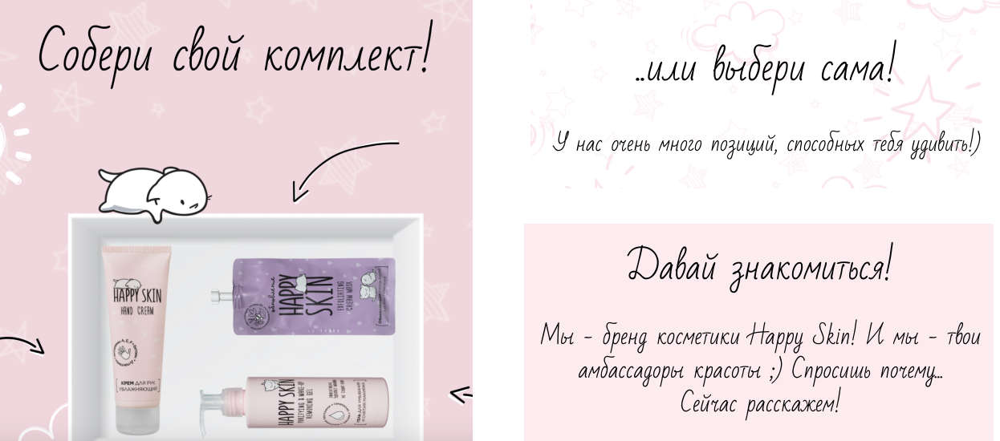
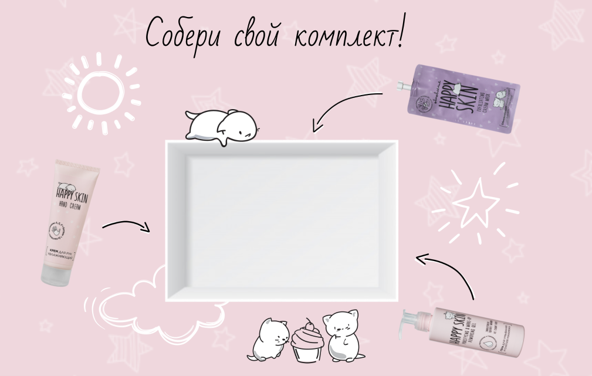

О кейсе
Бренд молодёжной ухаживающей косметики «Happy Skin» обратился к нам с просьбой разработать лендинг-магазин для своей косметики и его дизайн в 2019 году. Задачей было разработать дружелюбный сайт, привлекающий глаз и удерживающийся внимание до самого конца.

Мы выбрали диалоговую форму, каждый новый заголовок и текст - логично продолжает предыдущий, отвечает на естественные вопросы читателя, каждый блок нацелен на то, чтобы привлечь и заинтересовать в товаре.
Обложка была разработана с оглядкой на фирменный стиль бренда - приятный и яркий оттенок розового цвета, написанный от руки текст и изюминка дизайна - котики.

Пошаговая анимация, применённая нами в обложке - одна из сильных сторон Тильды, которую мы не могли не использовать. Такой выбор CMS обусловлен форматом сайта - магазин-лендинг должен быть простым и приятным глазу, содержать только необходимую информацию. В нашем бюро мы вдумчиво подходим к выбору технологий для реализации проекта.